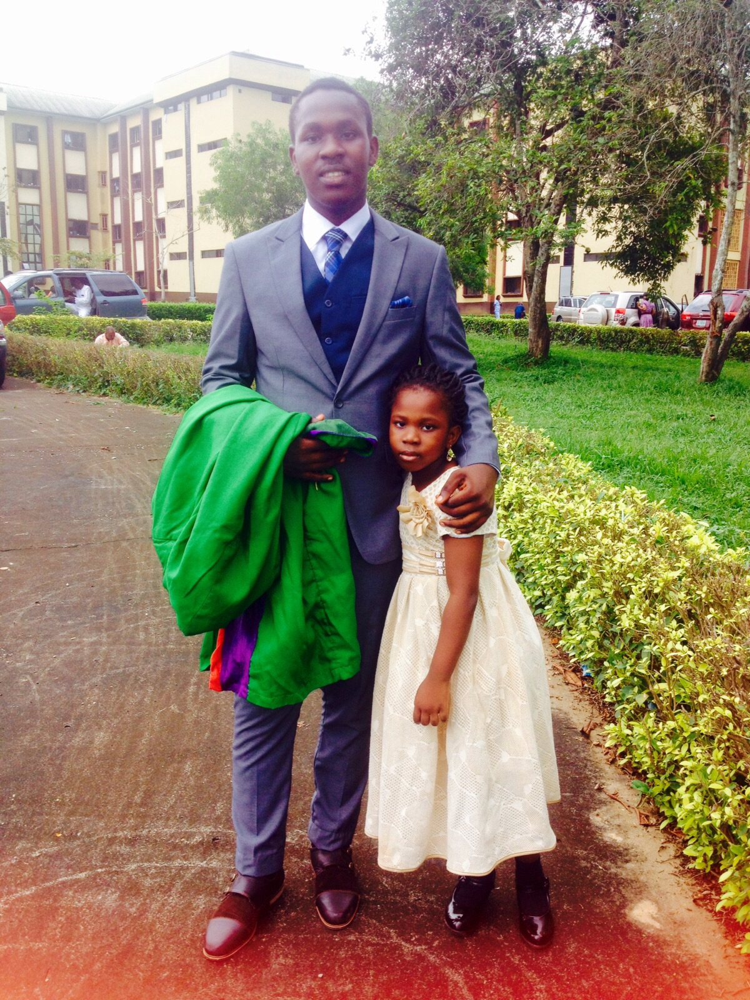
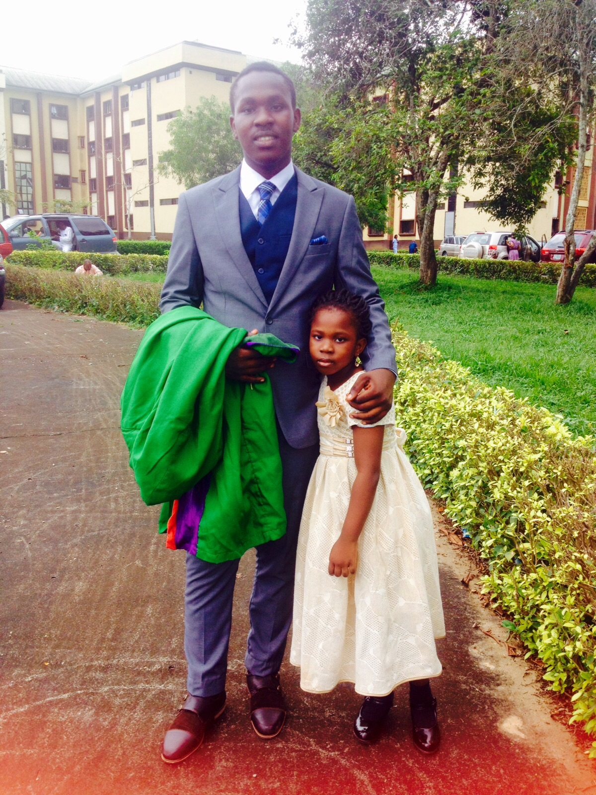

Educational Backgroung
I attended Louisville Girls High School, Ogun State, where I obtained my Senior Secondary School Certificate and IGCSE. Thereafter, I went on to Covenant University, Ota, where I bagged a first-class degree in computer engineering. I hope to get a master’s degree in business administration soon.
Current Position
I am the Chief Operations Officer at Sharphire Global Limited. It is the parent company of Africa’s most innovative Internet start-ups including PushCV, Piggybank and FrontDESK. At Sharphire, we build products that solve real problems and make life easier, focusing on the labour market. What we hope to achieve is very simple- to create awesome start-ups that will make huge positive impacts on the labour market.
Job Description
As the chief operations officer, my job is to plan, direct and oversee the company’s operational policies and goals. My job involves helping the company execute long-term and short-term plans and directives. I measure the effectiveness and efficiency of our operational processes both internally and externally and find ways to improve upon them. I get involved in developing and implementing growth strategies which ensure quality compliance of all services offered by our company. I also coordinate with the human resources department and my co-founders to recruit skilled talents and keep the best employees.
Meet The Team
I met my co-founders Somto Ifezue and Joshua Chibueze at Covenant University, where I studied Computer Engineering. Prior to this, we founded another successful company, pushcv.com, a platform that connects verified employers to pre-screened candidates.
 

Meet The Family
My siblings Tolu,Toba and my baby sister Morin
Google Search
Odunayo Eweniyi, Co-Founder and Chief Operations Officer of Piggybank.ng, a company that securely makes saving money possible by combining discipline plus flexibility to enable customers grow and reach their savings target. Prior to starting PiggyBank.Ng, Eweniyi along with her co-founders founded PushCV.com, a platform that connects verified employers in Nigeria with pre-screened candidates. In this interview with Mary Olushoga, Founder of the AWP Network – Eweniyi talks more about what inspired her to start her business, and shares her plans for the future.
Marketing
It all started with a tweet. In 2015, a Twitter user shared a picture of her savings box and she talked about how she saved NGN365,000 by putting aside N1,000 (Naira) everyday. This conversation then progressed into how to automate the piggy bank concept, as the original concept requires a substantial amount of discipline. In addition, the security and the safety of the box is not guaranteed. This is what inspired us to start the business and this is how Piggybank.ng was born – out of the cons list of a wooden box.
Views
We can support and improve innovation in Africa by embracing tech. Africa has a young demographic who are tech-savvy; we have only just scratched the surface when it comes to how we are using tech to innovate.